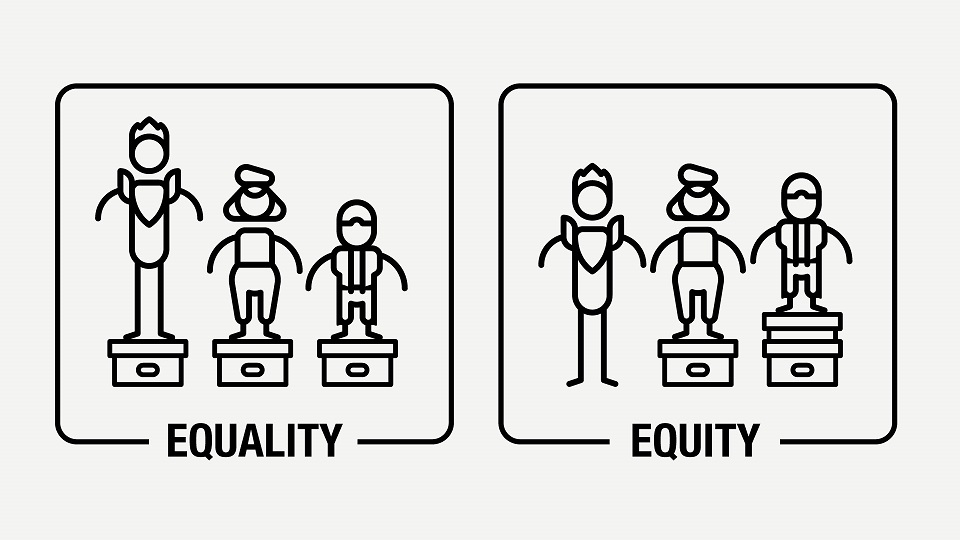
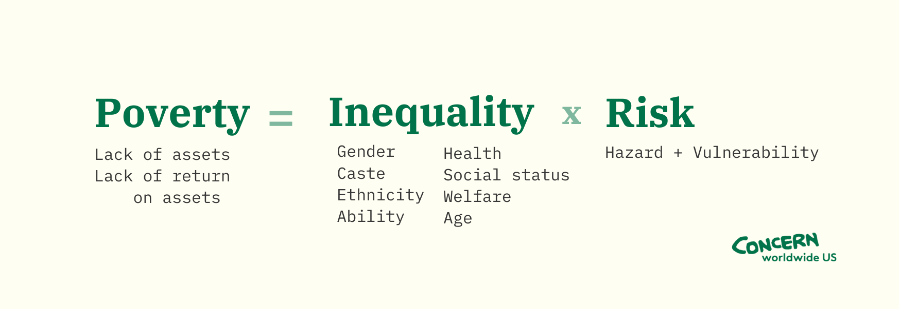
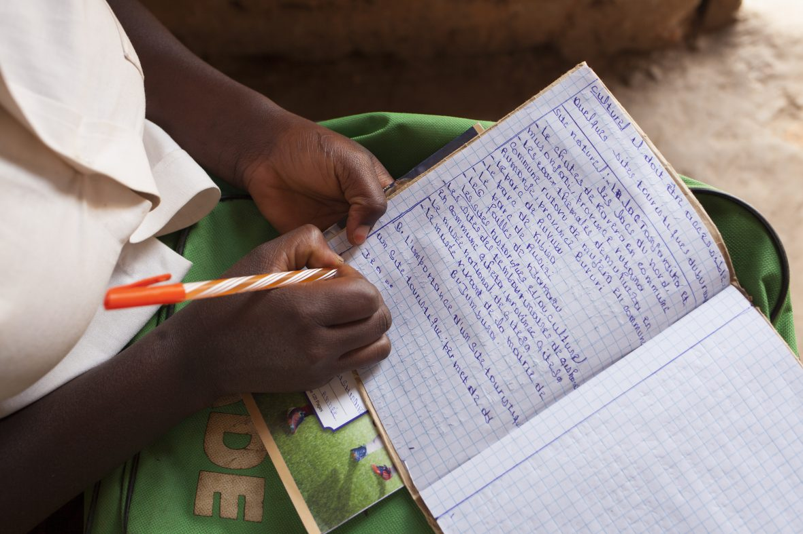

SOLUTIONS TO POVERTY TO GET US TO 2030
What would Zero Poverty look like for the world in 2030? Here are a few starting points.
1. ELIMINATING POVERTY THROUGH EQUITY
One of the main causes of poverty is inequality. The systemic barriers that lead to groups of people going without representation in their communities leaves them further behind in terms of resources and opportunity. In order for a community, or even a country, to alleviate poverty, all groups and identities must be involved in creating solutions.
One of the biggest inequalities we need to address is gender inequality. According to the UN’s High-Level Panel for Women’s Economic Empowerment, women’s unpaid labor adds up to $10 trillion per year — 13% of the global GDP. According to the Food and Agriculture Organization, women own less than 20% of agricultural land in parts of Africa and Asia, yet make up 60% of the agricultural workforce.

2. REDUCING POVERTY WITH RESILIENCE
Poverty happens when a high amount of inequality meets a high amount of risk.

For instance, the Democratic Republic of Congo has suffered ongoing conflict since gaining independence from Belgium in 1960. This has left millions of Congolese vulnerable, either living in conflict zones or in displacement camps (or both). When another crisis hits, like the DRC’s 2019 Ebola epidemic or 2021’s Mount Nyiragongo eruption, people are much less able to cope because their resources have already been worn thin. To offset this, we need to ensure that the most vulnerable people and communities are able to build resilience. While the meaning of that phrase has changed in recent years, it means something very concrete in humanitarian aid and development. Resilience for us means working with communities to prepare for disasters — whether manmade or natural — in advance. It also means adapting to long-term changes (such as fighting climate change with Climate Smart Agriculture or creating programs to support the education, safety, and livelihoods of refugees or IDPs). These solutions to poverty help to offset the level of vulnerability communities may have in the face of risks — or even reduce the level of risk.
3. COMMIT TO CLIMATE CHANGE SOLUTIONS AND CLIMATE JUSTICE
Resilience against climate change is especially important and deserves its own mention. According to the World Bank, climate change could force an additional 100 million people into extreme poverty over the next decade without any urgent action taken.
Concern maintains overall climate responses (such as Disaster Risk Reduction), as well as specific programs (like Paribartan in India and Bangladesh, BRCiS in Somalia, and RAPID in Pakistan). But one of the solutions to poverty that goes beyond any humanitarian mandate is a governmental commitment to climate justice, particularly on the parts of high-income countries whose carbon emissions are higher than those of the low-income countries hit hardest by climate change.
4. ERADICATING POVERTY THROUGH EDUCATION
According to UNESCO, if all students in low-income countries had just basic reading and writing skills (nothing else), an estimated 171 million people could escape extreme poverty. If all adults completed secondary education, we could cut the global poverty rate by more than half. Education develops skills and abilities, corrects some of the imbalances that come out of marginalization, and decreases both risk and vulnerability.
Some of the key areas of focus for making sure that education is truly for all involve breaking down the barriers to education: creating access to school in remote areas, supporting teachers in their work to deliver quality education, and making sure that education is available to children living in fragile contexts.

5. HALTING POVERTY BY ENDING HUNGER (AND THIRST)
Simply eating three meals a day and getting a healthy amount of calories and nutrients can go a long way to breaking the cycle of poverty. When a person doesn’t have enough to eat, they lack the strength and energy needed to work. Contaminated water can lead to debilitating illnesses.
What’s more, improving access to clean water can mean that those who live in rural communities. If you go back to our first point on inequality, you might be able to guess that water is a women’s issue. Current estimates suggest that women and girls collectively spend 200 million hours every day walking long distances to fetch water.
Adequate healthcare options for all goes hand-in-hand with this solution, and represents a larger need for governments to offer the basic social protections and services to keep their citizens healthy, and give them affordable treatment options when they aren’t.